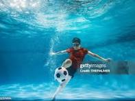

Here is my first blog
Hey My name is EUGENE MAINA,amd i'm excited to share a little about my journey with you.i've always been someone who dremas big,but turning those dremas into reality has been a transformative experience.in this blog i'll take you through my ups and down.
Growing up i was fascinatesb by hobbies and spent countless hours exploring them.i was mostly intresteed in playing football and swimming.Ihas curve a path that felt uniquely mine.
As i got older realized that my passion lay in softwaer engineering when i touched my first computer. i got intresteed to see how people desighn things.
I should stay curious,never stop learning no matter how much i think i know. i aslo learned that i should embrace faliure it's not the end just part of the process. i should also trust the process since it take time.
Thank you for taking time to read my story if you'd like to connect or learn more feel free to reach at my contact me page.